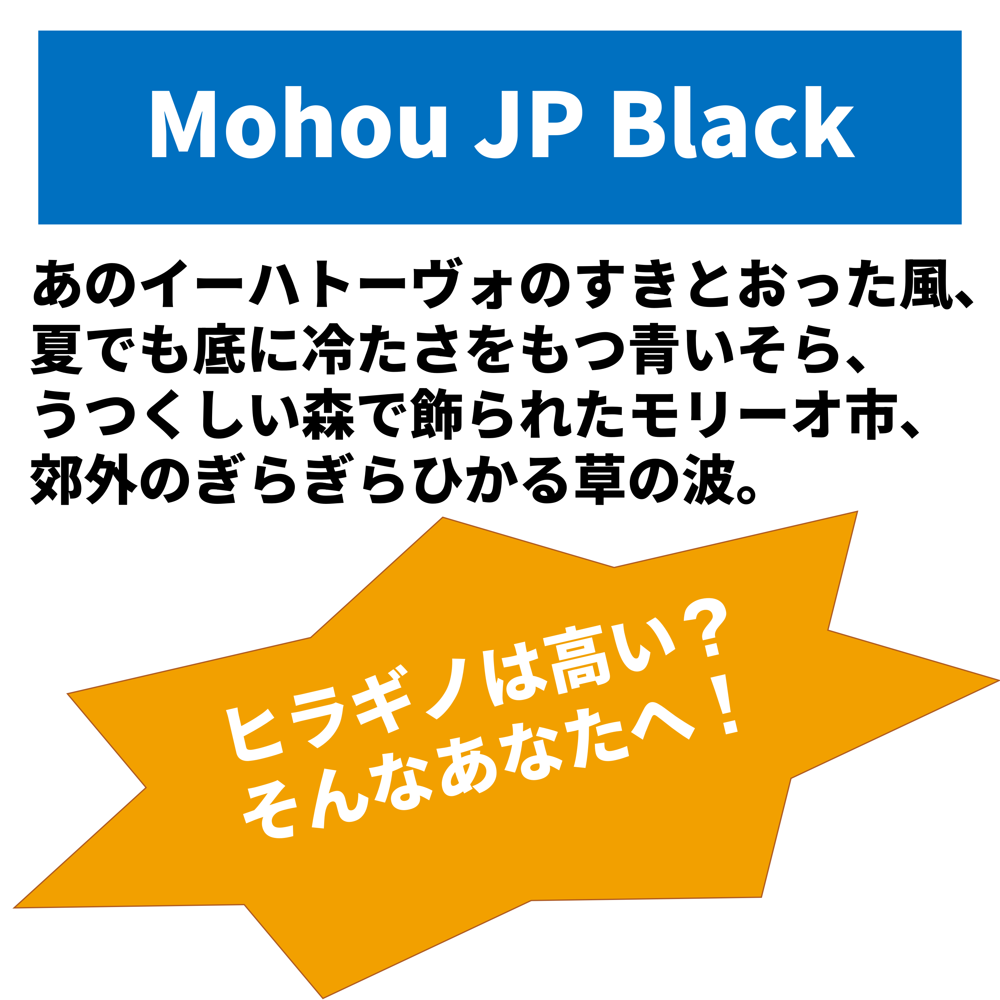

配布フォント
ここでは、私が作ったフリーフォントを配布しています。
フォントづくり初心者なので、質はまだまだですが、よかったらご自由にお使いください。
※初めてアクセスする方は、ここをクリックしてダウンロード方法をごらんください。
新しい順に並んでいます。
Mohou JP Black

このフォントは、ヒラギノ角ゴシック StdN W8をイメージして作ったフォントです。
Noto Sans JP Blackを改変して、いろいろとヒラギノ角ゴシックに寄せてみました。
フォントについての詳しい情報は、以下のYouTube動画またはダウンロードしたファイルの中に入っているReadme.txtにてご確認ください。